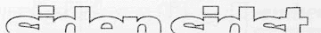
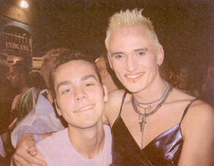
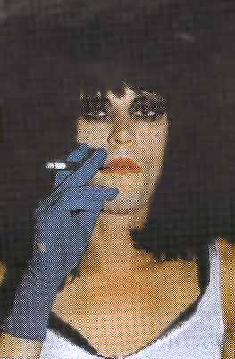
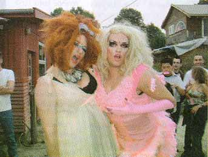

| September 2002 |


Dennis Agerblad - efter showet med kendt selskab. "Du kan bare skrive, at vi har været kærester".


Print denne side
  Dennis Agerblad - efter showet med kendt selskab. "Du kan bare skrive, at vi har været kærester". |
||
 |
||
| Puta før det store show: "Jeg er trash. Det rene Kalliningrad.
Nu gælder det bare om at gå amok!"
|
||
|  |
||
| Sidste års vinder og nr.2 - i år i køen som publikum. "Jeg holder med Dennis Agerblad og Tammy Holestream - de er mine to føl". Ramona: "Jeg lider af cirkushest-syndromet, så snart jeg lugter savsmuldet, vil jeg selv derop på catwalken. Men det er en kæmpe fornøjelse at se kandidaternes fantasi". | ||
|
Print denne side |